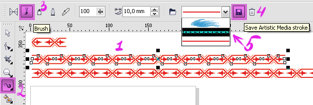

ВОПРОС / ОТВЕТ ДЛЯ НАЧИНАЮЩИХ
polzovatel-902 / 13.07.2010, 09:21/00:41
Форум:
Объясню на примере, чтоб было понятней... Открываю в кореле картинку (футболку с надписью) в формате JPG, мне нужно вытянуть из футболки надпись, т.е разъеденить файл... Говорят нужно формат изменить, еще что-то... Объясните, пожалуйста, что нужно сделать для этого...? Заранее спасибо.
Нужно сделать кисть и ее применить к окружности
DynamiteBoy, было бы корректно, если бы Вы сами сказали о недостатках предложенного способа.
Можно немного подробней как делать кисть?(Нужно сделать кисть и ее применить к окружности)
1. Выделяем узор (не снимаем выделения!)
2. Выбираем инструмент Артистик медиа
3. Выбираем режим - Кисть
4. Жмем кнопку сохранения образца кисти
Выделяем фигуру к которой хотим применить кисть.
В списке сохраненных кистей (5) выбираем наш образец и он автоматически применяется к выделенной фигуре.

Ок, все получилось как в школе!Результатом доволен!
Помогите, пожалуйста! как загрузить скачанный векторный клипарт в Corel? файл -импорт пробовала,вставляется как картинка обычная
irsha, в каком формате клипарт то?
Привет всем :)
проблема такая, х5 при сохранениии save as виснет и все...ничеог не помогает!
Виснет на любом файле или конкретном, а если сохранить через cmx?
Fluffy, какая конкретно версия Х5, какая система, куда идёт сохранение?
Страницы